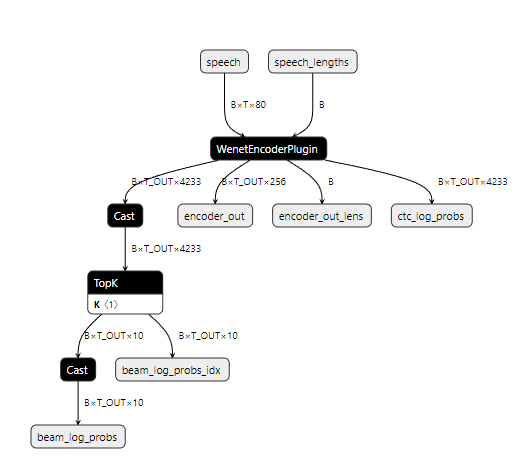
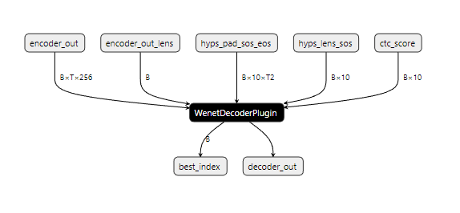
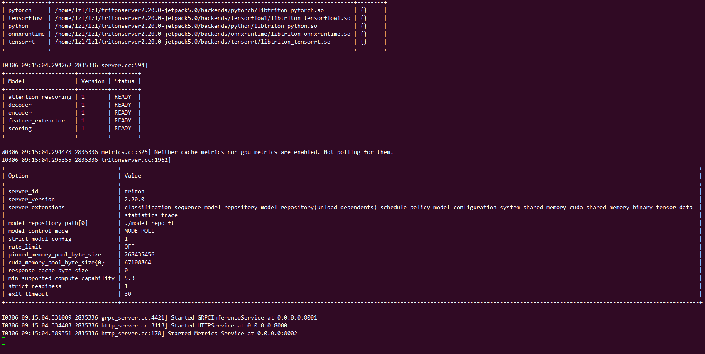

语音识别模型部署¶
一、模型准备¶
下载最新版开源语音识别工具包wenet
git clone https://github.com/wenet-e2e/wenet.git
下载基于Conformer编码器的预训练语音识别模型
wget https://wenet-1256283475.cos.ap-shanghai.myqcloud.com/models/aishell/20211025_conformer_exp.tar.gz
tar zxvf 20211025_conformer_exp.tar.gz
model_dir=$(pwd)/20211025_conformer_exp
二、模型转换–Pytorch to ONNX¶
若直接在Jetson模块上进行模型转换会出现内存不足的问题，模型转换工作需要移植到PC端完成
首先将此前下载的wenet/wenet文件夹拷贝到项目文件下，里面提供了模型转换所需要的函数。需要将下载的torch模型转换为ONNX模型，使用到wenet/bin/export_onnx_gpu.py函数，模型转换的脚本export_onnx.sh：
#!/bin/bash
export CUDA_VISIBLE_DEVICES="0"
model_dir=20211025_conformer_exp
onnx_model_dir=aishell_onnx
mkdir -p $onnx_model_dir
python wenet/bin/export_onnx_gpu.py \
--config=$model_dir/train.yaml \
--checkpoint=$model_dir/final.pt \
--cmvn_file=$model_dir/global_cmvn \
--ctc_weight=0.5 \
--output_onnx_dir=$onnx_model_dir \
--fp16 \
--decoder_fastertransformer || exit 1
cp $model_dir/words.txt $model_dir/train.yaml $onnx_model_dir
三、编译FasterTransformer¶
在Jetson Xavier NX板子上将上述生成的ONNX模型拷贝到板子的wenet/runtime/gpu/tensorrt_fastertransformer目录下，在wenet/runtime/gpu/tensorrt_fastertransformer目录下进行编译，编译脚本为compile_fastertransformer.sh：
#!/bin/bash
# path: {home}/wenet/runtime/gpu/tensorrt_fastertransformer
mkdir -p exp1
outputs_dir=./exp1
ft_path=./FasterTransformer
pushd ${ft_path}
export TRT_LIBPATH=/usr/lib/aarch64-linux-gnu
CUR_DIR=`pwd`
mkdir -p build
cd build
cmake \
-DCMAKE_BUILD_TYPE=Release \
-DCMAKE_VERBOSE_MAKEFILE=OFF \
-DCMAKE_INSTALL_PREFIX=${CUR_DIR}/install \
-DBUILD_TF=OFF \
-DBUILD_PYT=OFF \
-DBUILD_MULTI_GPU=OFF \
-DUSE_NVTX=OFF \
-DBUILD_EXAMPLE=ON \
-DBUILD_TEST=OFF \
-DBUILD_TRT=ON \
-DBUILD_ORGIN_NET=OFF \
..
make -j6 || exit 1 # 根据实际CPU数目选择
popd
cp ${ft_path}/build/lib/libtrt_wenet.so $outputs_dir
四、提取权重¶
在wenet/runtime/gpu/tensorrt_fastertransformer目录下，运行脚本extract_weight_replace_plugins.sh，注意：模型在转换过程中需要读取ONNX图节点，需要使用pip安装onnx和onnx-graphsurgeon工具：
#!/bin/bash
onnx_model_dir=aishell_onnx
d_model=256
head_num=4
vocab_size=4233
outputs_dir=exp1
mkdir -p /weight/enc
mkdir -p /weight/dec
python3 extract_weights.py --input_onnx $onnx_model_dir/encoder.onnx --output_dir /weight/enc || exit 1
python3 extract_weights.py --input_onnx $onnx_model_dir/decoder.onnx --output_dir /weight/dec || exit 1
python3 replace_plugin.py --input_onnx $onnx_model_dir/encoder.onnx \
--d_model $d_model --head_num $head_num --vocab_size $vocab_size\
--output_onnx ${outputs_dir}/encoder_plugin.onnx || exit 1
python3 replace_plugin.py --input_onnx $onnx_model_dir/decoder.onnx \
--output_onnx ${outputs_dir}/decoder_plugin.onnx \
--d_model $d_model --head_num $head_num --vocab_size $vocab_size \
--num_layer 6 || exit 1


五、模型转换–ONNX to TensorRT¶
使用trtexec工具，将ONNX模型转化为更易于推理的Tensorrt模型，转换脚本为onnx_tensorrt.sh：
#!/bin/bash
trtexec=/usr/src/tensorrt/bin/trtexec
d_model=256
BEAM_SIZE=10
MIN_BATCH=1
OPT_BATCH=16
MAX_BATCH=16
ENC_MIN_LEN=16
ENC_OPT_LEN=512
ENC_MAX_LEN=2048
DEC_MIN_LEN=$(( ENC_MIN_LEN / 4))
DEC_OPT_LEN=$(( ENC_OPT_LEN / 4))
DEC_MAX_LEN=$(( ENC_MAX_LEN / 4))
outputs_dir=./exp1
cd $outputs_dir
if [ ! -d /weight/enc ] || [ ! -d /weight/dec ]; then
echo "Please extract weights and move them here first"
exit 1
fi
echo "convert to trt"
${trtexec} \
--onnx=./encoder_plugin.onnx \
--minShapes=speech:${MIN_BATCH}x${ENC_MIN_LEN}x80,speech_lengths:${MIN_BATCH} \
--optShapes=speech:${OPT_BATCH}x${ENC_OPT_LEN}x80,speech_lengths:${OPT_BATCH} \
--maxShapes=speech:${MAX_BATCH}x${ENC_MAX_LEN}x80,speech_lengths:${MAX_BATCH} \
--fp16 \
--plugins=./libtrt_wenet.so \
--saveEngine=./encoder.plan
${trtexec} \
--onnx=./decoder_plugin.onnx \
--minShapes=encoder_out:${MIN_BATCH}x${DEC_MIN_LEN}x$d_model,encoder_out_lens:${MIN_BATCH},hyps_pad_sos_eos:${MIN_BATCH}x${BEAM_SIZE}x${MIN_HYPS_PAD},hyps_lens_sos:${MIN_BATCH}x${BEAM_SIZE},ctc_score:${MIN_BATCH}x${BEAM_SIZE} \
--optShapes=encoder_out:${OPT_BATCH}x${DEC_OPT_LEN}x$d_model,encoder_out_lens:${OPT_BATCH},hyps_pad_sos_eos:${OPT_BATCH}x${BEAM_SIZE}x${OPT_HYPS_PAD},hyps_lens_sos:${OPT_BATCH}x${BEAM_SIZE},ctc_score:${OPT_BATCH}x${BEAM_SIZE} \
--maxShapes=encoder_out:${MAX_BATCH}x${DEC_MAX_LEN}x$d_model,encoder_out_lens:${MAX_BATCH},hyps_pad_sos_eos:${MAX_BATCH}x${BEAM_SIZE}x${MAX_HYPS_PAD},hyps_lens_sos:${MAX_BATCH}x${BEAM_SIZE},ctc_score:${MAX_BATCH}x${BEAM_SIZE} \
--fp16 \
--plugins=./libtrt_wenet.so \
--saveEngine=./decoder.plan \
--buildOnly
# infer with random input would cause illegal memory access error
cd -
六、更新配置文件¶
自动更新模型仓库中config.pbtxt文件，对应的更新脚本为auto_gen_config.sh：
#!/bin/bash
onnx_model_dir=aishell_onnx
d_model=256
vocab_size=4233
MAX_BATCH=16
MAX_BATCH_FOR_SCORING=16
dirs="encoder decoder feature_extractor scoring attention_rescoring"
DICT_PATH=$onnx_model_dir/words.txt
VOCAB_SIZE=$vocab_size
MAX_DELAY=0
MAX_BATCH_SIZE=$MAX_BATCH
D_MODEL=$d_model
INSTANCE_NUM=1
INSTANCE_NUM_FOR_SCORING=2
model_repo_path=./model_repo_ft
if [ ! -d $model_repo_path ]; then
echo "Please cd to model_repo_path"
exit 1
fi
for dir in $dirs
do
cp $model_repo_path/$dir/config.pbtxt.template $model_repo_path/$dir/config.pbtxt
sed -i "s|DICT_PATH|${DICT_PATH}|g" $model_repo_path/$dir/config.pbtxt
sed -i "s/BEAM_SIZE/${BEAM_SIZE}/g" $model_repo_path/$dir/config.pbtxt
sed -i "s/VOCAB_SIZE/${VOCAB_SIZE}/g" $model_repo_path/$dir/config.pbtxt
sed -i "s/MAX_DELAY/${MAX_DELAY}/g" $model_repo_path/$dir/config.pbtxt
sed -i "s/D_MODEL/${D_MODEL}/g" $model_repo_path/$dir/config.pbtxt
if [ "$dir" == "decoder" ]; then
sed -i "s/MAX_BATCH/${MAX_BATCH_FOR_SCORING}/g" $model_repo_path/$dir/config.pbtxt
sed -i "s/INSTANCE_NUM/${INSTANCE_NUM}/g" $model_repo_path/$dir/config.pbtxt
elif [ "$dir" == "scoring" ]; then
sed -i "s/MAX_BATCH/${MAX_BATCH_FOR_SCORING}/g" $model_repo_path/$dir/config.pbtxt
sed -i "s/INSTANCE_NUM/${INSTANCE_NUM_FOR_SCORING}/g" $model_repo_path/$dir/config.pbtxt
else
sed -i "s/MAX_BATCH/${MAX_BATCH_SIZE}/g" $model_repo_path/$dir/config.pbtxt
sed -i "s/INSTANCE_NUM/${INSTANCE_NUM}/g" $model_repo_path/$dir/config.pbtxt
fi
done
七、加载TensorRT模型¶
将生成的encoder.plan和decoder.plan更新到模型仓库中，并添加MD5校验，加载的脚本为load_model.sh：
#!/bin/bash
model_repo_path=./model_repo_ft
outputs_dir=./exp1
mkdir -p $model_repo_path/encoder/1/
cp $outputs_dir/encoder.plan $model_repo_path/encoder/1/
encoder_md5=`md5sum $model_repo_path/encoder/1/encoder.plan | awk '{ print $1 }'`
sed -i "s|ENCODER_MD5|${encoder_md5}|g" $model_repo_path/encoder/config.pbtxt
mkdir -p $model_repo_path/decoder/1/
cp $outputs_dir/decoder.plan $model_repo_path/decoder/1/
decoder_md5=`md5sum $model_repo_path/decoder/1/decoder.plan | awk '{ print $1 }'`
sed -i "s|DECODER_MD5|${decoder_md5}|g" $model_repo_path/decoder/config.pbtxt
mkdir -p $model_repo_path/attention_rescoring/1/
cp $outputs_dir/libtrt_wenet.so $model_repo_path/../
启动Triton推理服务器加载模型
启动Triton部署语音识别服务端，启动的脚本为infer.sh：
#!/bin/bash
echo "launch triton server"
model_repo_path=./model_repo_ft
LD_PRELOAD=./libtrt_wenet.so tritonserver --model-repository $model_repo_path \
--backend-directory=/home/lzl/lzl/tritonserver2.20.0-jetpack5.0/backends --model-control-mode=poll
